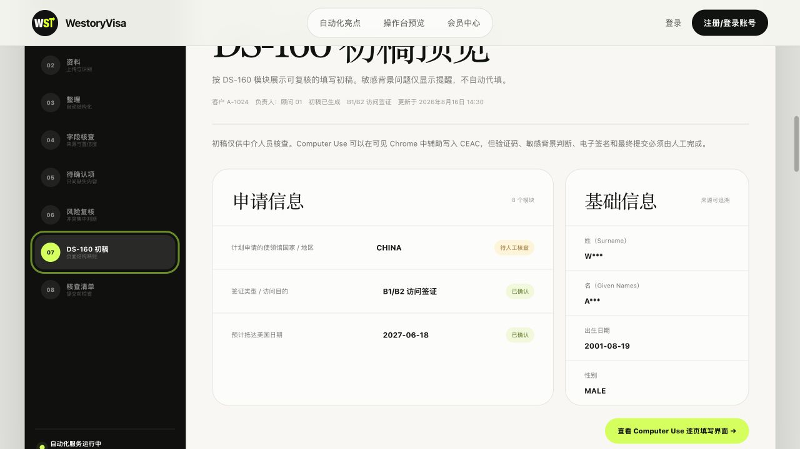
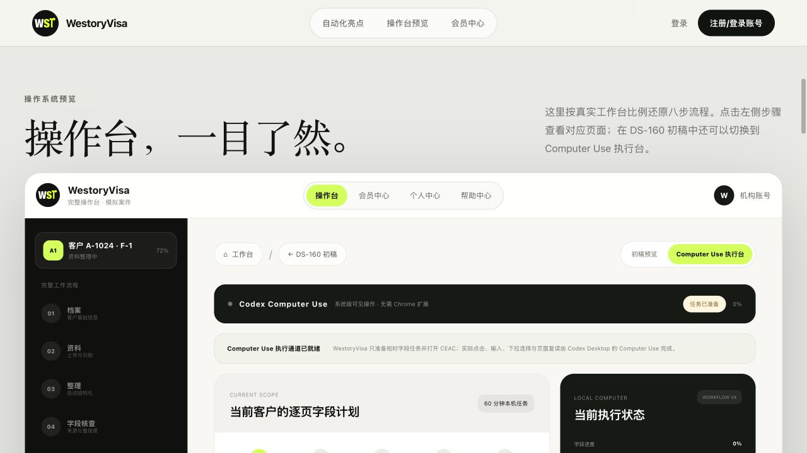

为签证顾问打造
WestoryVisa
把一整套 DS-160 流程
交给自动化持续推进
材料自动读取、缺失信息自动归集、字段自动整理、页面逐步辅助填写。
顾问无需在文件、聊天记录和多个工具之间反复切换。
约 8 分钟为自动填写一份 DS‑160 的内部实测参考时间，不含验证码、电子签名及最终提交；实际耗时受材料完整度、页面状态和网络环境影响。
操作系统预览
操作台，一目了然。
这里按真实工作台比例还原九步流程。点击左侧步骤查看对应页面，并可从初稿继续查看 DS-160 逐页填写。
WestoryVisa完整操作台 · 模拟案件
W机构账号
产品细节
再了解一下 WestoryVisa
字段证据不是猜出来，
不是猜出来，
是找得到。
文件、页码和原文证据，始终跟着字段一起保留。
团队交接换个人接手，
换个人接手，
不用从头来。
进度、待确认原因和人工修改，都留在同一个案件中。
二审复核改了哪里，
改了哪里，
一眼看清。
系统结果与人工更正分开记录，复核只关注真正的变化。
客户补充只问缺的，
只问缺的，
不问已有的。
已有资料自动跳过，只把缺失或冲突的问题发给客户。

